-
Jimmy Yoon
User Interface Designer
About Me
I'm a UI designer... that likes to code too
Hi there,
I’m Jimmy Yoon, a UI designer that likes delving in Front-End Developmen and User Experiencet.
I was originally born in Chicago but have been living with my parents in Singapore since 2005. I currently attend Northwestern University in Evanston, IL and will graduate in June 2016.
My design philosophy is to create solutions that solve the user’s problem. I want them to know that every decision made is for their benefit.
Pulseband
Client: Designation Labs
Role: UI Design, Front-End Dev
The Challenge
DESIGNATION Labs gave my team a project to design a mobile companion app for their product, the Pulseband, a piece of wearable health technology that monitors a user’s heart statistics and condition. Through domain research and interviews, our team concluded that a lot of people don’t have clear, fast, or efficient ways to monitor the heart health and progress of themselves, loved ones, or patients.
The Solution
The UX research showed that users want an app that utilizes the data in a meaningful way, provides motivation, and is encouraging. We used that information to design an app that was easily understandable, provided actionable recommendations, and gave encouragement via an online social circle.
Our main goals were to make the UI design help the user identify their heart’s current condition as well as what they could do to improve their health, along with making sure that the UI design followed current aesthetic trends. For the front-end development, this pertained more to the marketing website, which I designed and coded. The main goals for the website were to make the product appealing and to showcase the companion app and its features.
Below are some exploratory style tiles, each trying to encompass a different type of aesthetic.
Style #1 was chosen to be applied to the companion app. This approach was to use accent colors on a white background to emphasize the heart’s current status or highlight different areas of the app.
For the marketing website, the approach was to make it friendly and clean. Below is the style guide of the website along with mock-ups. The aesthetic taken with the design, specifically the color palette, was blue-themed because the color scheme resonated with our logo; we also felt that the color scheme was inviting.
Mobile Doorman
Client: Mobile Doorman
Role: UI Design
The Challenge
Mobile Doorman is a company trying to create a virtual experience as an intermediary between apartment tenants and the apartment management. They gave our UI team the task to help design their mobile interface, based on wireframes that were already produced. Each designer in our team worked together on the competitive analysis but designed different styles of the mobile app to offer to the client. The client asked us to stick to a limited color palette; this was to try and make the app adaptable to any property brand. The client also asked to create an Android design if time permitted.
View the wireframes here
The Solution
Our main goals were to make the design inviting to use, utilitarian, and visually aesthetic by following current design trends. After designing a variety of style guides, I chose to design the product to make it look clean and modern, but also, adaptable to different property colors.
Style Tile #2 was chosen to design the interface. Using the iOS user interface guidelines and Google’s Material Design guidelines, I tried to design both an iOS and Android interface of the app. Below are mock up screens of the interface I designed.
- 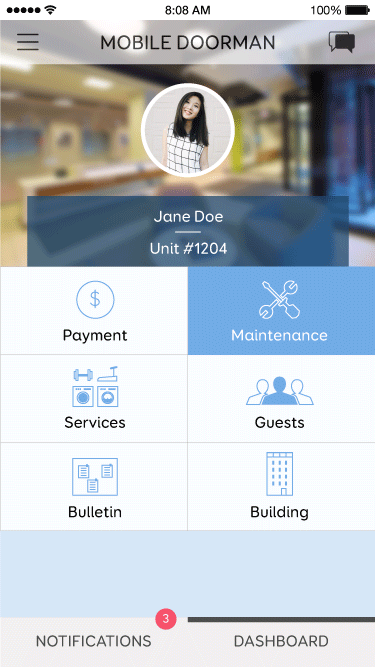
- 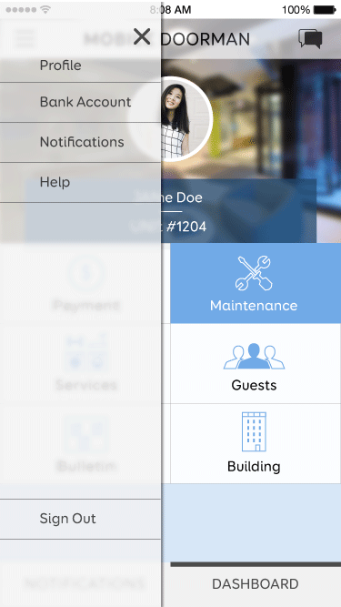

- 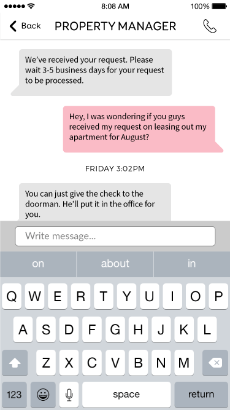
- 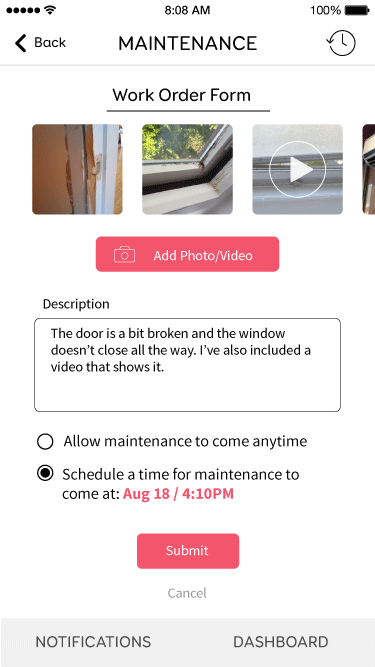
- 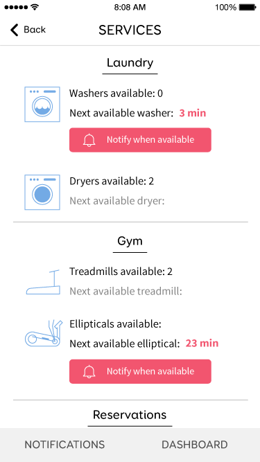
- 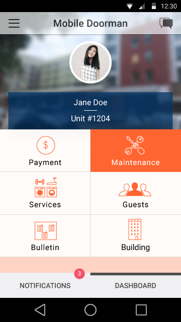
- 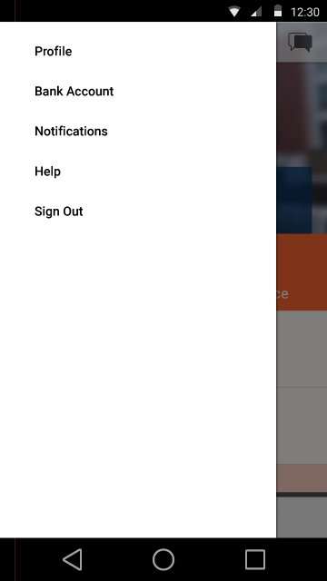
- 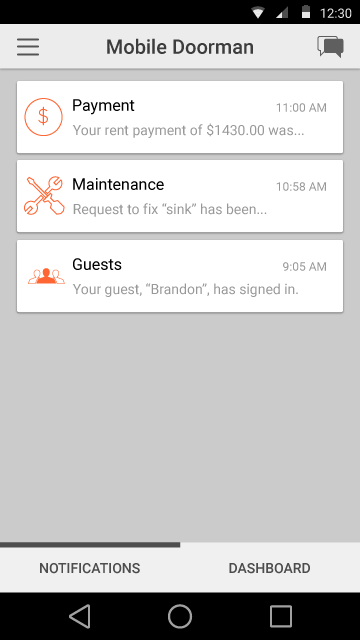

- 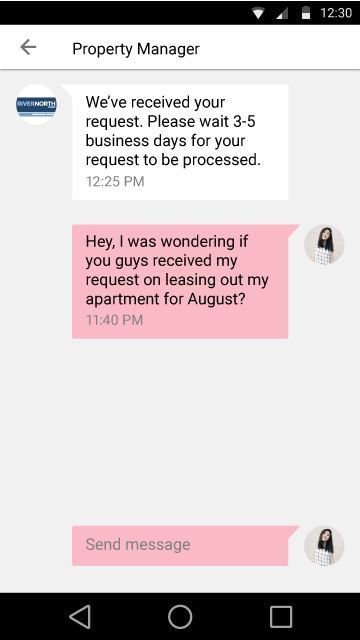
- 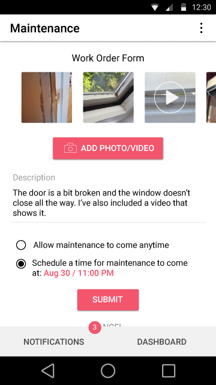
- 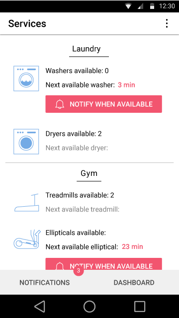
DeskLogic Online Forms
Client: Desklogic
Role: UI Design, Front-End Dev
The Challenge
I was given a front-end development project to create the website for a company called DeskLogic, whose goal it was to try and help furnish office spaces based on a questionnaire that potential users would fill out. My job was to create a responsive design of the online forms that the user would fill out. I was given previous UX and UI work done for DeskLogic, but the forms portion that was completed for the UX had not been fleshed out in the UI. I chose to take some creative liberty and create a UI design of my own.
View the wireframes here
The Solution
Since the UX and UI (to an extent) had already been finished for me, it was my job to code the website using HTML, CSS and Javascript, along with jQuery. As previously mentioned, I also tried to design the UI in a way to make it look and feel modern, while also trying to make sure it looked easy to use. Below is the style guide of the website I designed.
Here are a few mock up screens of the website on a variety of screen sizes.
Featured Work
Pulseband
UI Design, Front-End Dev
View Case StudyMobile Doorman
UI Design
View Case StudyDeskLogic
UI Design, Front-End Dev
View Case StudyResume
Sept 2012 - Present
Northwestern University
B.S.: Radio/TV/Film | Evanston, IL
Along with my B.S. in RTVF, I will have also completed the Interactive Arts module within my department and the design certificate within the Segal Design Institute.
Oct 2013 - Present
Northwestern Student Affairs Marketing
Graphic Designer | Evanston, IL
I work as a graphic designer on a variety of projects from different departments at Northwestern. Many of the designed items include things such as posters, TV ads, and brochures. Example pieces can be found on my Behance site.
Jun - Sept 2015
Designation Labs
UI Designer + Front-End Developer | Chicago, IL
I was immersed in a program to learn full-stack design. During the program, I worked on exploratory start-up products as well as projects from existing start-ups.
Contact Me
Email me at jimmyjyoon@gmail.com